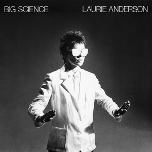
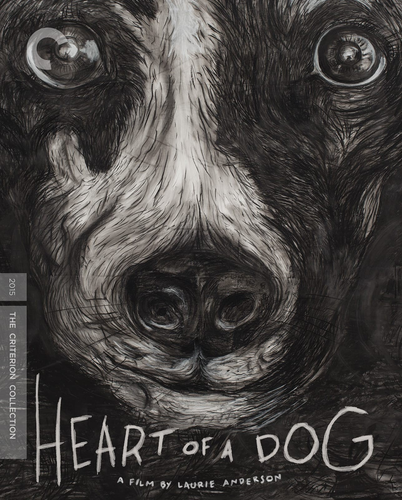
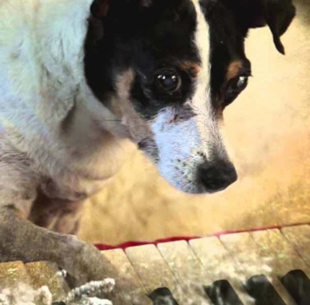

Tecnología, narrativa y experimentación
Carrera musical
En cuanto a sus proyectos puramente musicales, sus obras suelen desarrollarse como narraciones fragmentadas, donde la voz guía al espectador a través de historias que mezclan lo personal, lo político y lo ficticio. Este enfoque permite explorar nuevas formas de contar, donde la estructura no es lineal y la interpretación queda abierta.
Utiliza dispositivos electrónicos, procesamiento de voz y medios audiovisuales para construir experiencias que combinan relato y experimentación.
Entre sus trabajos más tempranos, sus álbumes más reconocidos son Big Science (1982) y United States Live (1984), su música se caracteriza por crear un efecto 'Cine Audio', al combinar aspectos del arte experimental performático con sonidos electrónicos, synth-pop, los cuales eran novedosos para su época.


Otros proyectos


Heart of a Dog es un documental de 2015 dirigido por la artista visual y compositora Laurie Anderson. Se centra en los recuerdos de Anderson de su difunta y querida perra Lolabelle, que toca el piano y pinta con los dedos.


Chalkroom es una obra de realidad virtual de Laurie Anderson y Hsin-Chien Huang en la que el lector vuela a través de una enorme estructura hecha de palabras, dibujos e historias.
Una vez que ingresas, eres libre de deambular y volar. Las palabras navegan por el aire como correos electrónicos. Caen al polvo. Se forman y reforman.